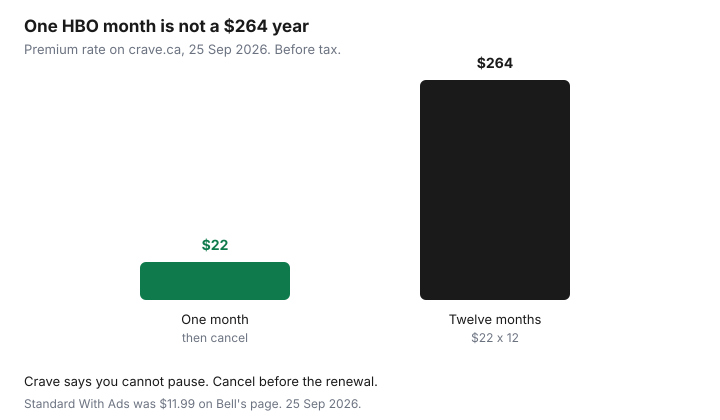

Subscriptions · Canada
How to Cancel Crave in Canada: Direct, App Store, and Bell Bundle Paths
Crave is a Canadian service, and the cancel button depends on who sends the bill. People cancel on crave.ca and keep paying because Apple, Google, or Bell never got the message. The other version is the reverse: they drop a Bell package and a direct Crave plan keeps renewing, because Crave’s own help says a provider signup does not cancel a direct plan. Identify the path first. Then cancel in that path. Then keep the email.
Prices used for the one-month comparison below: Bell’s streaming page, used 25 Sep 2026, lists Crave Standard With Ads at $11.99 a month. Crave’s subscribe page the same day offered Premium at $11.99 for the first month and $22 a month after, for new, upgrading, and reactivating subscribers. Your invoice can differ, especially on an older plan or a bundle. Read the account. Rotation, if Crave is a slot rather than the always-on service, is the streaming guide. Whether to keep Bell TV at all is the cord-cutting guide. This page is only the Crave charge.
Disclosure: This page has no natural affiliate offer. Education only. Cancel in the account that bills you, and keep the confirmation. We do not claim a Crave, Bell, Apple, or Google partnership.
Key takeaways
- Direct Crave: crave.ca, Manage Account, Subscriptions, Cancel Subscription. Access lasts until the renewal you already prepaid. Crave’s cancel article says you cannot pause.
- Apple, Google, Roku, and an Amazon Prime Video channel are cancelled in those stores, not on Crave.
- Bell Fibe or wireless: MyBell, My services, Subscriptions, Manage subscriptions, Cancel subscription. A direct plan does not cancel itself when you add Bell.
- Standard With Ads was $11.99 on Bell’s streaming page, and the Premium offer on crave.ca was $22 after a $11.99 first month, used 25 Sep 2026. A month of Premium is the HBO month. A year at $22 is $264 before tax.
- Save the confirmation and the final charge date. Check the next bill.
Identify your billing path: crave.ca, Apple/Google, or Bell Fibe/wireless bundle
Open the receipt before you open the app. A charge from Crave or Bell Media on a card, with a crave.ca account that shows a card on file, is direct. A line that says Apple or iTunes is Apple. Google Play or a Google payments email is Google. Roku and an Amazon Prime Video channel are their own paths. Crave’s cancel article names all of these. A line on a Bell mobility or Fibe bill, or a Crave tile inside a Bell package, is Bell. You can have two of these at once. That is the duplicate.
Crave’s help says that if you sign up through a cable or mobility provider, an existing direct subscription does not automatically cancel. You have to cancel the direct one yourself. Bell’s subscriptions help says the same thing from the other side: a Crave plan billed by Crave is not paused or cancelled when you subscribe through Bell, and you manage the direct plan so you are not paying twice. Look at both accounts before you celebrate a cancel.
Direct cancel steps on Crave Account then Manage Subscription
Crave’s article “How do I cancel my subscription?”, used 25 Sep 2026, is the direct path. The billing period starts the day you subscribed. If you joined on the 12th, the renewal is the 12th. Crave is prepaid. After you cancel you keep access until the end of the current cycle. Their example: renewal on the 15th, cancel on the 30th, access continues until the next renewal, and the subscription ends on that renewal date. To avoid the next charge, cancel before the renewal. If renewal is the 15th, they say cancel by the 14th of the following month. An annual plan works the same way, with a yearly date.
- Sign in at crave.ca with the admin profile. A secondary profile can hide the account links.
- Open Manage Account from the user icon on the home page.
- Click Subscriptions.
- At the top right of that page, click Cancel Subscription.
- Finish the steps until you see the confirmation page. Save it.
Cancelling Crave also cancels add-ons such as STARZ. Cancelling only the add-on does not cancel Crave. STARZ on the subscribe page started at $6.99 a month plus tax, and it follows the features of the Crave plan you have. If you only wanted to drop STARZ, use Cancel add-on under that row and leave the base plan until you have decided on it.
App Store / Google Play billed Crave must be cancelled in those stores—not on Crave
Crave’s cancel article is explicit. An Apple signup is managed in Apple subscriptions, on an iPhone, iPad, or a computer. A Google signup is managed in Google subscriptions. The crave.ca cancel button does not reach those bills. Apple’s Canadian support page, published 14 Sep 2026, puts subscriptions under Settings, your name, Subscriptions, and says a trial should be cancelled at least 24 hours before it renews. Google’s path is Payments and subscriptions. Uninstalling the Crave app does not cancel either store.
The same article sends Roku subscribers to the Roku account, and Prime Video channel subscribers to Amazon’s subscriptions. A channel inside Prime is not the Prime membership. Ending Prime, or ignoring the channel, are different buttons. Prime’s own fee, $9.99 a month or $99 a year before tax on the fee page used 24 Sep 2026, is the Prime guide.
Bell-bundled Crave: cancel through Bell self-serve or chat, not Crave alone
Bell’s subscriptions help, used 25 Sep 2026, gives the self-serve cancel. Sign in to MyBell. Select My services, then Subscriptions. Select Manage subscriptions. Select the subscription, then Cancel subscription, then Yes, cancel subscription, then Confirm cancellation. Downgrades through that page take effect at the next renewal. Upgrades take effect immediately. Bell’s streaming page says you can cancel or downgrade a subscription at any time, the change applies at the next renewal, you keep access until then, and there is no refund. Taxes are extra. A change can also change the bundle price or remove a credit. Read the screen that explains the new bill before you confirm.
If MyBell will not remove Crave because it is welded into a Fibe or wireless bundle, that is a chat or a call, still with Bell, not with Crave. Ask what the package costs without that subscription, and what credits you lose. Write the number down. Leaving TV entirely is a different project, on the Ignite and cord-cutting guides. Here you only need the Crave line to stop, or to know that it cannot stop without a package change. Virgin Plus and other mobility partners follow their own account tools. Crave’s help says to contact the mobility provider. Cancelling on crave.ca will not remove their line.

Downgrade or pause options before a full cancel when you only need HBO titles for a month
Crave’s cancel article ends with a plain sentence: you can cancel at any time, and you cannot pause. There is no three-month pause like Netflix. The substitute for “I only need HBO this month” is a monthly plan, then a cancel before the next renewal, with access until that renewal. Standard With Ads at $11.99 is the cheaper month if ads and two streams are acceptable. Premium at $22 is the month if you want the ad-free plan, four streams, and downloads. A year of Premium at that $22 rate is $264 before tax. Four months would be $88. The year is the wrong product for one season.
If you are already in a higher plan and the Subscriptions page offers a lower one, read when the lower price starts. On Bell, a downgrade waits until the next renewal, so you will not save the current period. Cancelling an add-on you do not need, such as STARZ, is the cut that does not require leaving Crave. When the season is over, cancel the base plan too, unless Crave is the household’s always-on service on the rotation calendar.
| Who bills you | Where you cancel | What does not work |
|---|---|---|
| crave.ca card | Manage Account, Subscriptions, Cancel Subscription | Deleting the app. A secondary profile that hides Manage Account. |
| Apple or Google | That store’s subscriptions list | The button on crave.ca |
| Bell Fibe or wireless | MyBell subscriptions, or Bell chat if it is inside the package | Crave alone. Also, adding Bell does not cancel a direct plan. |
| Roku or Prime Video channel | Roku account, or Amazon subscriptions | Cancelling Prime membership by mistake, or ignoring the channel |
Confirm the final charge date and keep the confirmation email
The confirmation page is the record. Save a PDF into the same quarterly folder as the other cancellations. Write the last day of access and the date you expect no further charge. On a direct monthly plan, that date is the renewal Crave described, not the day you clicked. On Bell, it is the next renewal, and the help text says no refund of the current period. If a charge posts after that date, the confirmation is what you attach. Memory of a phone call, without a reference number, is a weaker record. Ask for the reference number before you hang up.
Then look at the other path one more time. Direct cancelled, Bell still billing, is a failed cancel. Bell cancelled, Apple still billing, is the same failure. Two confirmations, when two billers existed. One confirmation, when you proved there was only one.
Sources & date stamps
- Crave Help, “How do I cancel my subscription?”, used 25 Sep 2026: prepaid access until the renewal, cancel before that date, Manage Account then Subscriptions then Cancel Subscription, add-ons, cable and mobility providers, Apple, Google, Roku, Amazon Prime Video channels. “You cannot pause your subscription.” A provider signup does not cancel a direct plan.
- Bell Support, Subscriptions, used 25 Sep 2026: MyBell cancel steps. Direct Crave is not automatically paused or cancelled when you add Bell. Downgrades at the next renewal. Bell streaming page the same day: Crave Standard With Ads $11.99 a month. Cancel or downgrade takes effect at the next renewal. No refunds. Taxes extra.
- crave.ca/en/subscribe, used 25 Sep 2026: Premium first month $11.99, then $22 a month, for new, upgrading, and reactivating subscribers. STARZ add-on starting at $6.99 a month plus tax.
- The $264 bar is 12 × $22, before tax, on that Premium rate. Your plan price may differ. Prime $9.99 or $99 is the fee page used 24 Sep 2026.
Frequently asked questions
I cancelled on crave.ca and the charge is still there. Why?
The bill may be Apple, Google, Roku, Amazon, or Bell. Crave’s help says those paths are cancelled in those accounts. A direct cancel does not reach them.
Does Crave let me pause for a month?
Crave’s cancel article says you can cancel at any time and you cannot pause. Use a monthly plan for the month you will watch, then cancel before the renewal. You keep access until that renewal.
I added Crave through Bell. Did my old crave.ca plan stop?
No. Crave and Bell both say a direct subscription is not automatically cancelled when you subscribe through a provider. Cancel the direct plan yourself or you pay twice.
When is the last charge?
On a direct plan, cancel before the renewal date and access runs until that renewal. Bell says a cancel takes effect at the next renewal and the current period is not refunded. Save the confirmation with that date on it.
Will cancelling STARZ cancel Crave?
No. Crave says cancelling an add-on leaves the Crave plan in place. Cancelling Crave cancels the add-ons with it.